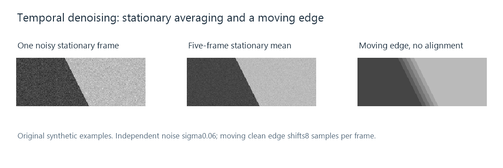

Video Denoising
A dim recording can show moving speckles across an otherwise plain wall. Each frame contains an observation of the wall mixed with variation from the capture and processing path. Denoising estimates the underlying picture from those observations and decides which variation to suppress.
The distinction between variation and error is essential. Fine surface texture, motion, and deliberately retained film grain are also variation. An effective estimate needs evidence that distinguishes the content being preserved from the noise being reduced.

Original synthetic examples. The stationary frames have independent zero-mean noise with standard deviation 0.06. The moving clean edge shifts eight source samples per frame. The figure illustrates two different averaging circumstances, not an Emby filter preset.
What does averaging actually improve?
Model an observed sample as value = signal + noise. If several observations contain the same signal and independent zero-mean noise, their average has the same expected signal. Their positive and negative errors partly cancel.
For N equally weighted observations, noise variance becomes σ²/N, and standard deviation becomes σ/√N. With σ = 0.06 and N = 5, the expected standard deviation of the mean is approximately 0.02683.
The numerical data behind the stationary figure has observed RMS errors of approximately 0.05963 for the first noisy frame and 0.02675 for the five-frame mean, before display rounding. Those values are close to the model's expectations. The diagonal edge remains in the same place in every frame, so averaging can reduce the noise without changing the noiseless edge's position.
A smaller example uses four observations of an unchanged signal near 100: 98, 103, 99, 104. Their mean is 101. Cancellation has reduced this example's variation, but a finite set of observations need not land exactly on the unknown signal value. More evidence improves the estimate under the model's assumptions; it does not make the particular mean automatically exact.
Spatial evidence: which neighbors describe the same surface?
A spatial estimate uses information within a frame. On a flat wall, nearby positions may have similar underlying values, making a local average useful. At a boundary, nearby samples may instead describe different surfaces.
Take a dark region near value 40 and a bright region near 180. Averaging an equal number from each gives 110, which belongs to neither side. Applying that mixture across an edge spreads its transition. Broad averaging can also remove texture whose variation is real content.
An edge-sensitive estimate can reduce contributions from positions that differ substantially from the target, or compare more of their surrounding structure before treating them as related. The similarity decision becomes as important as the average itself. A faint texture can still resemble small noise variations, which is why the chosen strength changes the character of the result.
Spatial filtering supplies nearby evidence without needing other frames. Its neighborhood and similarity policy determine both the amount of noise reduction and which fine features survive.
Temporal evidence: what happened to this point between frames?
Temporal filtering draws evidence from different instants. The stationary example works well because the same coordinate depicts the same edge position in all five frames. During motion, that assumption changes.
Imagine a fixed coordinate that receives values 40, 40, 180, 180 as an edge passes it. Their mean is 110. This is a mixture of different scene states, not merely a cleaner observation of one state.
The third panel averages a moving edge without alignment. Several shifted transitions form a spread-out staircase. In real video, similar mixing can create trails behind motion, smear moving texture, or cause detail to appear and disappear as temporal history is admitted or rejected.
Motion-aware processing can find source positions in other frames corresponding to the same scene feature. If a feature moved two positions right, the current coordinate and the earlier coordinate displaced two positions left can refer to that same feature. Comparing and aligning those observations gives a more appropriate basis for combination.
Newly revealed regions, occlusion, scene cuts, and uncertain motion leave less reliable history. A temporal filter needs to limit, reject, or reset that history where its assumptions no longer hold. Otherwise evidence from the old picture can influence a new one.
Which parts of the noise persist?
The σ/√N result depends on independence and zero mean. A fixed pattern repeated in every frame does not cancel like independent fluctuations. If every observation of signal 100 carries the same +5 offset, their mean remains 105.
Compression errors can also have structure and correlations. Blocking or ringing follows the coding and reconstruction process rather than the stationary independent-noise model. A filter designed for speckled variation and an operation designed for a particular structured artifact can make different decisions.
Luma and chroma may have different noise characteristics. Processing them separately can reduce color speckling while preserving more luma detail, or make another chosen balance. The plane precisions, ranges, and sampling grids establish the numerical scale in which any threshold acts.
Grain and fine detail need an editorial decision
Film grain can be part of a work's intended presentation. Surface detail such as hair, fabric, or foliage also has fine irregular structure. Aggressive filtering may produce a smoother, less costly picture to encode while changing its intended texture.
That makes preservation a content decision, not simply a maximum-noise-reduction target. A useful comparison examines a flat area, fine texture, a moving object, and a transition between scenes. Each supplies evidence about a different filtering assumption.
For an Emby collection, this distinction is relevant when preparing a cleaned-up conversion of an old recording. The output should be evaluated as a version of that recording, including the texture and motion the viewer wants to retain.
Why the encoded result can change again
Frame-to-frame variation is less predictable than an unchanged flat surface. Reducing that variation can change the work needed by a video encoder and how it spends its data budget. At a selected bitrate, this can give other structure more room; at another rate-control mode, the encoder's resulting size can change.
The result depends on the encoder, its settings, and the material. Encoding a denoised intermediate can further alter the remaining texture. Inspecting only the intermediate misses that final reconstruction.